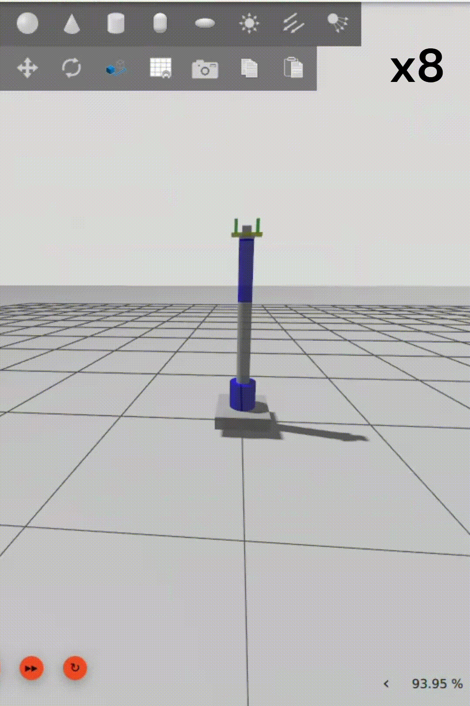
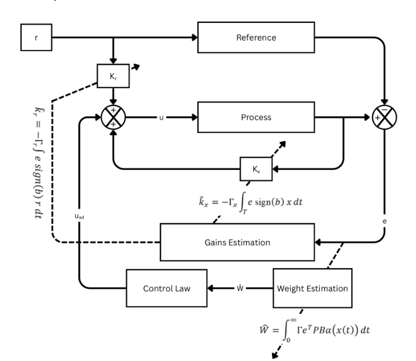
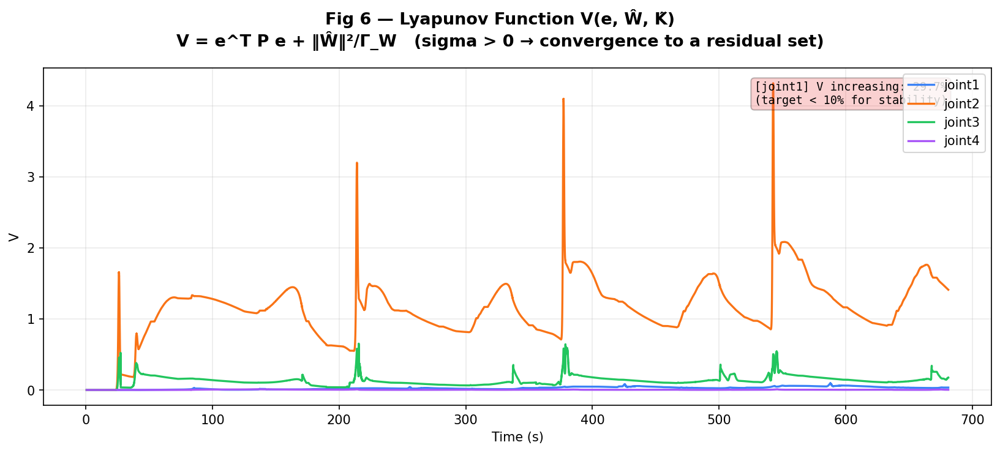
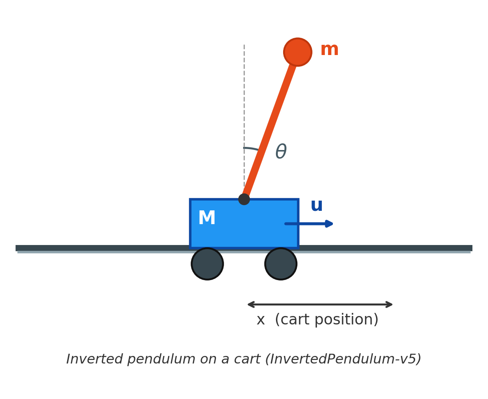
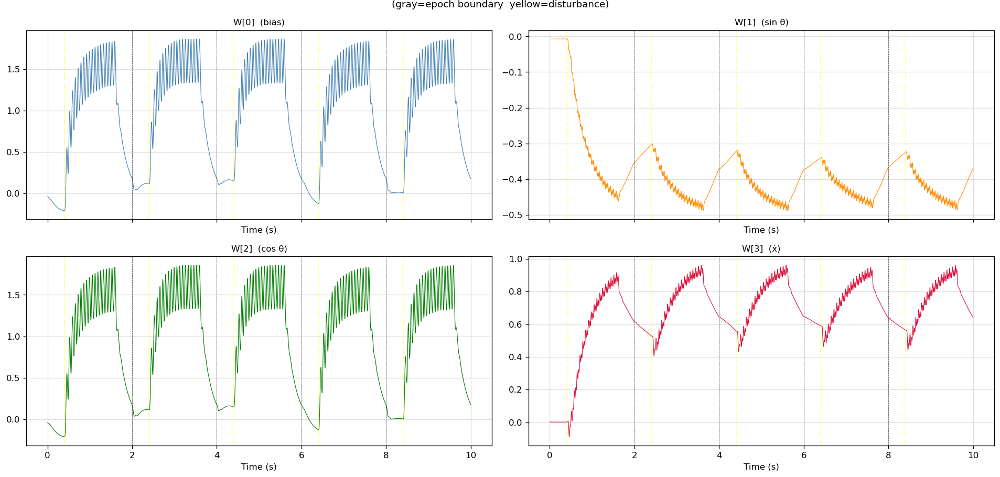
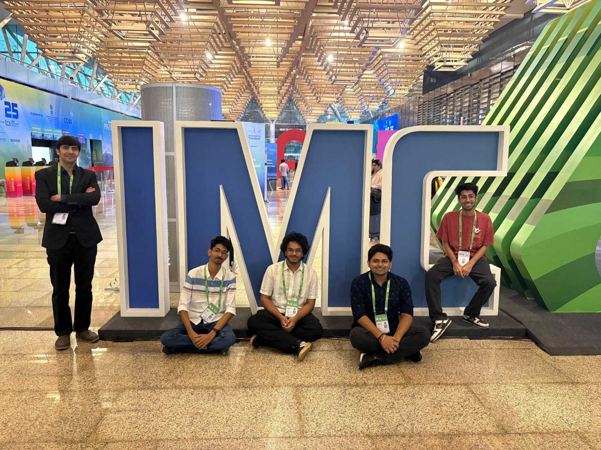
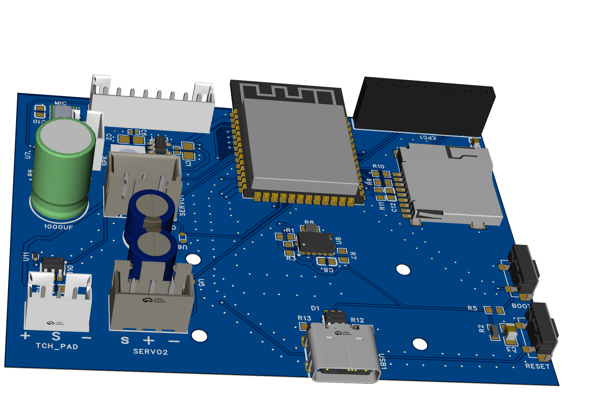

Robotics & Adaptive
Control Systems
Engineer.
Designing autonomous systems that sense, model, adapt, and act in uncertain physical environments. Bridging rigorous nonlinear control theory (Lyapunov stability, Direct MRAC, IMC) with real-time software deployment in ROS 2, Gazebo, and embedded hardware.
From First-Principles Theory to Embedded Execution
Modern robotics demands more than simply "making an actuator turn." High performance in uncertain, dynamic environments requires deep modeling, adaptive feedback, and clean real-time architectures.
Model it. Control it. Measure it. Then make it better."
4-DOF Robotic Arm — Robust Direct MRAC in ROS 2
Adaptive control of a multi-DOF manipulator simulated end-to-end in ROS 2 Jazzy + Gazebo Harmonic, with MoveIt 2 Cartesian trajectory planning and a custom 1 kHz C++ adaptive controller.
Direct Model Reference Adaptive Control + Robust Disturbance Compensation
The Engineering Problem
Fixed-gain PID controllers quickly degrade on robotic arms once payloads, friction, or gravity change across the workspace. No single set of PID gains works uniformly. This project implements a two-tier architecture:
- Direct MRAC: Drives each joint toward a reference model by updating feedback Kx and feedforward Kr online at 1 kHz without system identification.
- Robust Augmentation: A 6-term basis α(x) = [sin(q), cos(q), tanh(q̇), …]T that learns and cancels unmodeled friction and Coriolis coupling online via Barbalat's Lemma.
Adaptation: Ŵ̇ = Γ ∫ eᵀ · P · B · α(x(t)) dt
Convergence Across Repeated Loops
The arm was evaluated across four repeated training loops (~170 s per loop). Joint tracking error dropped dramatically as online gains converged into their bounded steady state.
| Joint | Max |e| (rad) | Mean |e| (rad) | Final e (rad) | Dominant Disturbance |
|---|---|---|---|---|
| J1 (Waist) | 0.0322 | 0.0075 | 0.0100 | Inertial only (zero gravity) |
| J2 (Shoulder) | 0.1994 | 0.0342 | 0.0339 | Heavy gravitational cantilever |
| J3 (Elbow) | 0.1544 | 0.0158 | 0.0055 | Mid-link flex & payload variation |
| J4 (Wrist) | 0.0245 | 0.0049 | 0.0151 | End-effector pitch |

High transient overshoot on Joint 2 & Joint 3 before weights converge. Controller adapts online from cold.


Cartpole — From IMC-PID to Robust MRAC (MuJoCo 3.x)
An interactive, 4th-order Runge-Kutta numerical testbench based on Mudit's MuJoCo paper. Compare analytical fixed gains (IMC-PID) against online Model Reference Adaptive Control (Robust MRAC) under sudden external velocity kicks.
Authentic MuJoCo 3.x Gymnasium Simulation Video
The 3-Controller Head-to-Head Comparison
5 epochs × 10 s, with an instantaneous +0.5 m/s velocity-kick applied at the start of each epoch — the toughest scenario: an impulse a fixed-gain controller cannot anticipate.
- IMC-PID (Blue): Cannot arrest cart drift after each velocity kick. Cumulative oscillations drift toward the ±1 m rail limit.
- Standard MRAC (Red): Actively drives the cart back to x = 0 via the adapted feedback gain Kx.
- Robust MRAC (Green): Eliminates error fastest. Its tanh(ẋ) basis is immediately excited by the velocity impulse, producing feedforward counteraction through uad with -43.7% ISE reduction and zero increase in torque.
| Metric (10 s Run) | Cascaded IMC-PID | Standard MRAC | Robust MRAC |
|---|---|---|---|
| System ID Needed | Yes (Model Inversion) | None | None |
| Peak Position Error |e_x| | Drifts to limit | ≈ 0.6 m | ≈ 0.3 m (-50%) |
| Total Cumulative ISE | Diverges on kick | 2.399 | 1.350 (-43.7%) |
Cascaded IMC-PID (blue) vs Standard MRAC (red) vs Robust MRAC (green).


GPS-Denied Surveillance UAV with Optical Link (IMC 2025)
Prototype demonstrated at India Mobile Congress (IMC) 2025. An autonomous aerial surveillance system utilizing optical-flow position locking and LiFi / infrared directional downlinks in RF-denied environments.
Optical Wireless Communication & Computer Vision Platform
Why Optical Communication in Defence?
Modern contested zones suffer from electronic warfare, RF jamming, and GPS spoofing. This platform replaces susceptible radio links with a directional optical / infrared downlink:
- Optical Flow Position Lock: Estimates relative visual ground feature motion to eliminate horizontal drift without GNSS.
- Infrared / Laser Transmitter: Narrow directional optical beam that cannot be intercepted by RF spectrum analyzers.
- Edge Threat Detection: Real-time YOLO object inference running on edge computing hardware (Raspberry Pi / ONNX).
| Link Distance | Achieved Prototype Data Rate | Status |
|---|---|---|
| 20 ft (~6.1 m) | 52 kbps | Demonstrated |
| 12 ft (~3.6 m) | 156 kbps | Demonstrated |
| 6 ft (~1.8 m) | 600 kbps | Demonstrated |

Project Mentor: Dr. Divyang Rawal · LNMIIT Team
Production PCB Design — SEVEN Companion Robot
Designed and verified two production-grade custom PCBs at S7 Innovation Labs LLP (Feb 2026): an intelligent battery power-path charging board and a high-density multi-peripheral main controller board for a kids companion robot.
Dual-Board Architecture · SEVEN Kids Companion Robot
Two Dedicated Production Hardware Subsystems
Engineering a child-safe companion robot demands high power-delivery reliability, low-noise analog/digital lines, and robust hardware-level protection against surges, reversed connections, and physical static:
- Charging & Power-Path PCB (Body Board): Engineered dynamic power-path management enabling simultaneous battery charging and continuous system operation. Integrated reverse-polarity protection, TVS surge clamping diodes, and filtered power distribution rails.
- Main Controller PCB (Head Board): High-density carrier integrating 5+ peripheral interfaces: I²S digital audio (amplified speaker + microphone array), I²C sensor fusion (IMU, environmental sensors), and shared SPI buses for high-speed color display and SD-card storage.
- DFM & ESD Protection Practices: Applied industrial Design for Manufacturing (DFM) rules, star grounding, controlled impedance, and TVS ESD suppression on all user-exposed ports for reliable mass production.
| Production Subsystem | Key Integrated Circuitry | Design Standards & Tools |
|---|---|---|
| Charging & Power PCB | Power-path switching, battery charging, TVS surge clamping | EasyEDA · DFM Verification |
| Main Controller PCB | MCU, I2S Audio, I2C Sensing, Shared SPI Display & Storage | EasyEDA / KiCad · ESD Suppression |

SEVEN Companion Robot · S7 Innovation Labs LLP · Click to inspect
Engineering Stack & Toolchain
A comprehensive toolchain spanning mathematical formulation, robotics middleware, simulation, and embedded hardware integration.
Connect & Collaborate
Whether you are discussing adaptive robotics control architectures, autonomous UAV deployments, research collaborations, or full-time / internship opportunities — let's build the future together.